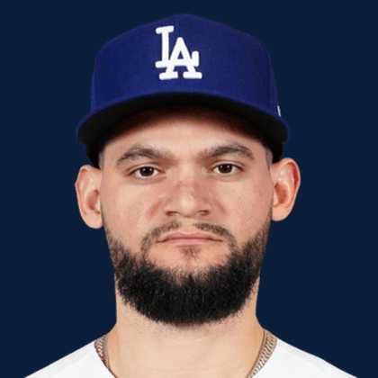

BASE KEEP
The Keep · The Diamond
Player File · OF LAD

Andy Pages
#44 · OF · Los Angeles Dodgers · age 25 · B/T RR · 6' 1" / 212 lbs · MLB debut 2024 · Havana, Cuba
Keep avg48.0
# Boards23
BK Value2,809
Spread30–77
Hitting
| Year | G | AB | R | H | 2B | HR | RBI | SB | BB | SO | AVG | OBP | SLG | OPS |
|---|---|---|---|---|---|---|---|---|---|---|---|---|---|---|
| 2026 | 127 | 492 | 72 | 134 | 25 | 21 | 80 | 12 | 45 | 106 | .272 | .338 | .459 | .797 |
| 2025 | 156 | 581 | 74 | 158 | 27 | 27 | 86 | 14 | 29 | 135 | .272 | .313 | .461 | .774 |
The Keep#47BK 2,809
The Lineup#37BK 3,459
The Diamond#46BK 2,867
The 2026 line
Keep #47 · avg 48.0 · 23 boards · .272 / 21 HR / 12 SB / .797 OPS
Baseball Savant
Starcast · spray · pitch
Percentile ranks (Starcast) plus the official Savant spray chart for bats and pitch chart for arms. Open the full Baseball Savant page.
Batter · 2026
xwOBA
71
xBA
82
xSLG
73
xISO
59
xOBP
66
Barrels
71
Barrel %
50
EV
41
Max EV
57
Hard Hit %
58
K %
60
BB %
38
Whiff %
60
Chase %
34
Speed
76
Arm
96
OAA
96
Bat Speed
60
Squared Up
45
Swing Len
69
Hits spray chart
Minus
- Board spread 30–77 (47 ranks).
Board graph
Spread 30–77 · 23 sources
Every Board
Spread 30–77 · 23 sources
| Source | Rank |
|---|---|
| RotoGraphs Model | 30 |
| Razzball | 39 |
| Enos Slaughter | 39 |
| RotoWire | 40 |
| The Athletic | 40 |
| FanGraphs The Board | 40 |
| CBS Sports | 45 |
| ESPN | 46 |
| NFBC ADP | 46 |
| Ottoneu | 46 |
| Mastersball | 46 |
| Yahoo Fantasy | 46 |
| ATC ROS | 46 |
| Baseball Prospectus | 49 |
| The Dynasty Dugout | 49 |
| Baseball America | 49 |
| MLB Pipeline mix | 49 |
| Fantasy Baseballers | 50 |
| Pitcher List | 52 |
| Four-Seam Fantasy | 52 |
| Dynasty League Baseball | 54 |
| TDG Points | 74 |
| FantasyPros Dynasty ECR | 77 |
BK News
- Today's Best MLB Home Run Prop Bets: Top 5 Predictions ft. Matt Olson, Pete Crow-Armstrong | August 17, 2026
- Today's top games to watch, best bets, odds: Phillies vs. Mariners, Cubs vs. Diamondbacks and more
- Mariners News: Kade Anderson, Randy Arozarena, and Giancarlo Stanton
- MLB Injury Report: Roman Anthony nearing return, Andy Pages to miss 4-5 weeks with fractured left hand
- Dodgers ‘Support’ Shohei Ohtani, Yoshinobu Yamamoto & Roki Sasaki In World Baseball Classic Despite Some Concern
All players · The Keep · The Diamond · BK News · The Lineup · Pitchers · Calculator